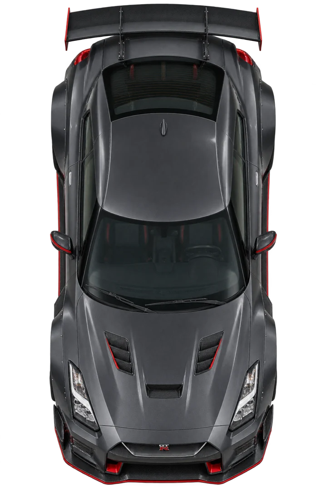
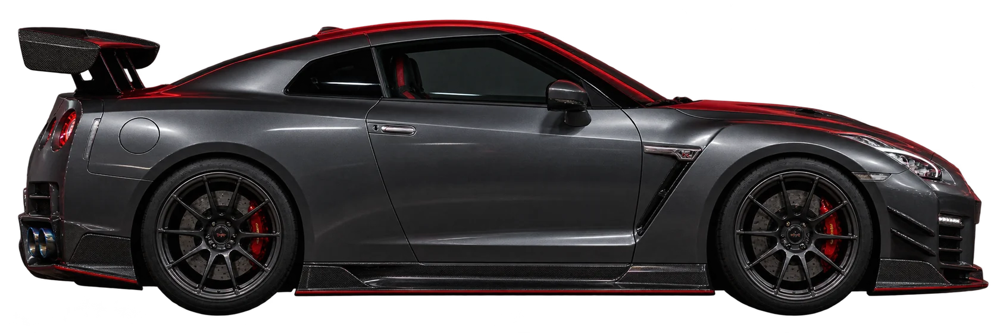

CULTURA JDM // GODZILLA
NISSANGT-R R35
O monstro de Yokohama. Um V6 biturbo, tração integral e presença suficiente para dominar qualquer rua.
↓ Ver ficha técnica
ARRASTE PARA TROCAR
FICHA TÉCNICA
NISSAN GT-R R35
- Motor
- 3.8 V6 biturbo
- Código
- VR38DETT

- Tração
- Integral
- Origem
- Yokohama
A COLEÇÃO
LENDAS DA RUA.
Três ícones japoneses que fizeram história nas pistas e nas ruas.
EXPERIÊNCIA INTERATIVA
PISE FUNDO.
Role para acelerar.
